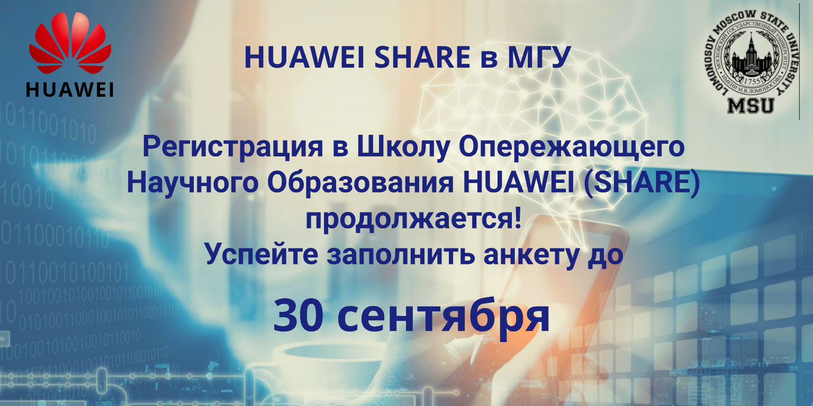
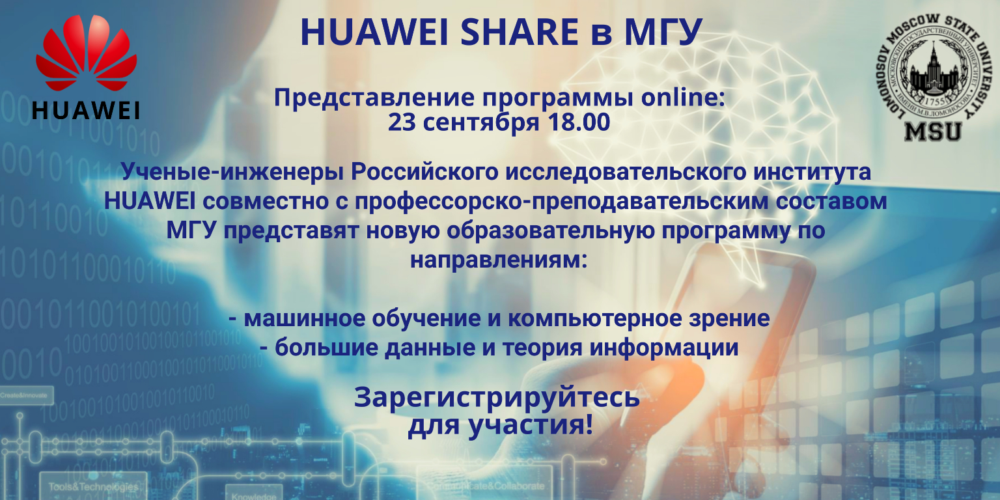
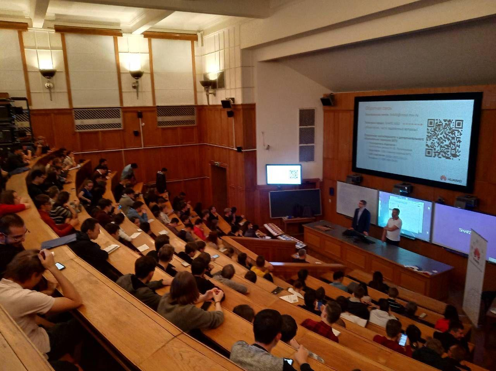

О программе SHARE MSU
Школа опережающего научного образования Huawei на базе МГУ им. М. В. Ломоносова, или SHARE MSU (School of Huawei Advanced Research Education at MSU), была организована в сентябре 2019 года как результат синергии одной из ведущих транснациональных корпораций в области исследования и разработки (R&D) Huawei и крупнейшего Университета в России - МГУ им. М. В. Ломоносова.Целями создания данной школы являются:
- Преподавание и освещение передовых направлений исследований в области науки о данных, синтеза цифровых чипов, теории информации и графов, исправляющих ошибки кодов, функционального программирования, цифровой обработки сигналов и изображений, машинного обучения, компьютерного зрения, теории нейронных сетей, а также необходимых программных и аппаратных решений для работы с перечисленным;
- Вовлечение студентов и аспирантов (прежде всего естественно-научных факультетов) в реальный цикл современного исследовательского процесса;
- Налаживание связей между индустрией и академией.
- Продолжительность обучения
- 2 года
- Учебная нагрузка
- В среднем 2 лекционных курса в семестр + возможные дополнительные семинарские занятия
- Зачисление
- Студенты 4-6 курсов, магистры, аспиранты и выпускники следующих факультетов МГУ им. М. В. Ломоносова: механико-математический, вычислительной математики и кибернетики, физический, космических исследований
- Стоимость обучения
- Бесплатно
- Окончание
- Выпускникам SHARE MSU выдается Сертификат о дополнительном образовании МГУ им. М. В. Ломоносова государственного образца
Курсы SHARE MSU
- Специализация "Машинное обучение и Компьютерное зрение"
- Курс "Математические методы цифровой обработки сигналов"
- Продолжительность: 1 семестр
- Преподаватели: к.ф.-м.н., с.н.с. Мазуренко Иван Леонидович, аспирант Дзабраев Максим Дмитриевич
-
О курсе
- Основы теории цифровой обработки сигналов и изображений
- Основные методы цифровой обработки сигналов и изображений во временной/пространственной и частотной областях
- Основные классические задачи цифровой обработки сигналов и изображений
- Примеры прикладных задач
- Библиотеки цифровой обработки сигналов и изображений в Matlab/Octave
- Библиотека OpenCV
- Курс "Математические методы цифровой обработки изображений"
- Продолжительность: 1 семестр
- Преподаватели: к.ф.-м.н., с.н.с. Мазуренко Иван Леонидович, аспирант Дзабраев Максим Дмитриевич
-
О курсе
- Основы теории цифровой обработки сигналов и изображений
- Основные методы цифровой обработки сигналов и изображений во временной/пространственной и частотной областях
- Основные классические задачи цифровой обработки сигналов и изображений
- Примеры прикладных задач
- Библиотеки цифровой обработки сигналов и изображений в Matlab/Octave
- Библиотека OpenCV
- Курс "Практические вопросы машинного обучения"
- Продолжительность: 1 семестр
- Преподаватели: д.ф.-м.н., проф. Бабин Дмитрий Николаевич, к.ф.-м.н. Иванов Илья Евгеньевич, к.ф.-м.н. Петюшко Александр Александрович
-
О курсе
- Основные задачи машинного обучения и метрики качества (ROC-кривая)
- Методы классификации
- Методы регрессии
- Композиции алгоритмов
- Курс "Практические вопросы современного компьютерного зрения"
- Продолжительность: 1 семестр
- Преподаватели: д.ф.-м.н., проф. Бабин Дмитрий Николаевич, к.ф.-м.н. Иванов Илья Евгеньевич, к.ф.-м.н. Петюшко Александр Александрович
-
О курсе
- Основные задачи компьютерного зрения (классификация, детекция, сегментация, улучшение изображений)
- История применения сверточных нейросетей к изображениям
- Генеративные модели
- Примеры прикладных задач
- Курс "Введение в теорию нейронных сетей"
- Продолжительность: 2 семестра
- Преподаватели: к.ф.-м.н., доц. Часовских Анатолий Александрович, к.ф.-м.н., н. с. Половников Владимир Сергеевич, аспирант Ронжин Дмитрий Владимирович
-
О курсе
- Основные архитектуры нейронных сетей и их функциональные свойства
- Задачи оптимизации сложности и быстродействия нейронных сетей
- Обоснование процедуры обучения нейронных сетей прямого распространения
- Особенности архитектуры и метода обучения рекуррентных нейронных сетей
- Открытые базы изображений
- Сверточные нейронные сети. Задачи классификации, детектирования, сегментации изображений
- Рекуррентные нейронные сети. Моделирование памяти и обработка последовательностей сигналов
- Семинар "Прикладное машинное обучение"
- Продолжительность: 1 семестр
- Преподаватели: д.ф.-м.н., проф. Бабин Дмитрий Николаевич, к.ф.-м.н. Иванов Илья Евгеньевич, к.ф.-м.н. Петюшко Александр Александрович
-
О семинаре
- Работа с данными и фреймворки машинного обучения в Python
- Соревнования по машинному обучению
- Семинар "Прикладное компьютерное зрение"
- Продолжительность: 1 семестр
- Преподаватели: д.ф.-м.н., проф. Бабин Дмитрий Николаевич, к.ф.-м.н. Иванов Илья Евгеньевич, к.ф.-м.н. Петюшко Александр Александрович
-
О семинаре
- Работа с изображениями и нейросетевые фреймворки в Python
- Соревнования по компьютерному зрению
- Семинар "Язык программирования Python для исследователя"
- Продолжительность: 1 семестр
- Преподаватели: д.ф.-м.н., проф. Бабин Дмитрий Николаевич, к.ф.-м.н. Иванов Илья Евгеньевич, к.ф.-м.н. Петюшко Александр Александрович, к.ф.-м.н. Иванюта Андрей Сергеевич, Корвяков Владимир Петрович
-
О семинаре
- Основы Python
- Специализированные библиотеки (Numpy, Pandas, scikit-learn)
- Визуализация данных (Matplotlib, opencv, scikit-image)
- Специализация "Большие данные и Теория информации"
- Курс "Приложение теории графов к синтезу БИС"
- Продолжительность: 2 семестра
- Преподаватели: к.ф.-м.н., доц. Часовских Анатолий Александрович, к.ф.-м.н., н. с. Половников Владимир Сергеевич, аспирант Ронжин Дмитрий Владимирович
-
О курсе
- Математическая модель проектирования БИС на основе технологии их синтеза
- Планарные графы. Теорема Понтрягина – Куратовского. Алгоритм укладки планарных графов, характеристики непланарных графов
- Минимальные прямоугольные деревья Штейнера, точные и приближенные решения
- Теоремы о раскраске графов, реализации степенных последовательностей графами
- Плоские схемы, оценка сложности арифметических плоских схем
- Эвристические алгоритмы размещения элементов
- Оптимизация разводки проводников
- Синтез специализированных схем: сортировщики, арифметические схемы и др.
- Курс "Программные среды разработки СБИС"
- Продолжительность: 1 семестр
- Преподаватели: д.ф.-м.н., проф. Гасанов Эльяр Эльдарович, к. ф.-м. н., м. н. с. Шуткин Юрий Сергеевич
-
О курсе
- Основы проектирования чипов
- Разработка инструментов симуляции и тестирования аппаратных дизайнов
- Анализ сложности аппаратных дизайнов
- Беспроводная передача информации
- Системы хранения данных
- Помехоустойчивые коды
- Курс "Введение в теорию помехоустойчивого кодирования"
- Продолжительность: 1 семестр
- Преподаватели: к.ф.-м.н., доц. Пантелеев Павел Анатольевич
-
О курсе
- Классические алгебраические коды (коды БЧХ, Рида—Соломона, Рида—Маллера)
- Современные конструкции кодов (низкоплотностные, сверточные, полярные коды)
- Практические аспекты реализации кодеров/декодеров
- Коды для распределенных систем хранения данных
- Квантовые коды
- Курс "Функциональное программирование на языке Scala/Haskell"
- Продолжительность: 1 семестр
- Преподаватели: к.ф.-м.н., м.н.с. Соколов Андрей Павлович, Моисеев Станислав Владимирович
-
О курсе
- Типизированное лямбда-исчисление, система типов Хиндли—Милнера
- Соответствие Карри—Ховарда между компьютерными программами и математическими доказательствами
- Интерпретации Брауэра—Гейтинга—Колмогорова интуиционистской логики
- Изучение функционального программирования и связанных с ним понятий (функции, функторы, аппликативные функторы, монады, монад-трансформеры и т.п.)
- Функциональные структуры данных и алгоритмы
- Курс "Разработка big-data-приложений на Apache Spark"
- Продолжительность: 1 семестр
- Преподаватели: к.ф.-м.н., м.н.с. Соколов Андрей Павлович, Моисеев Станислав Владимирович
-
О курсе
- Распределённые системы хранения и обработки данных
- Проектирование и анализ распределённых алгоритмов
- Фреймворк Apache Spark
- Статистический анализ данных
- Работа с таблицами
- Задачи на графах
Новости
- 2020, 23 сентября
- Повторное представление программы онлайн - 30 сентября в 18:00. Заполнить анкету на участие в программе можно по ссылке. Для участия в организационной встрече необходимо заполнить анкету, так как ссылка на online встречу будет направлена на адрес электронной почты, указанный в анкете.
- Постер приглашения
 - 2020, 23 сентября
- Состоялось представление программы SHARE MSU 2020 в 18:00 в онлайн режиме.
- Презентация программы-2020. Запись видео-конференции.
- 2020, 17 сентября
- Представление программы онлайн - 23 сентября в 18:00. Заполнить анкету на участие в программе можно по ссылке. Для участия в организационной встрече необходимо заполнить анкету, так как ссылка на online встречу будет направлена на адрес электронной почты, указанный в анкете.
- Постер приглашения
 - 2020, 26 июня
- 6 лучших студентов из числа имеющих высшие баллы были отобраны в качестве интернов в Лабораторию интеллектуальных систем и науки о данных Московского исследовательского центра Huawei.
- 2020, 29 мая
- Дополнительное занятие по курсу "Практические вопросы машинного обучения" с презентациями лучших работ на kaggle-соревновании.
- 2020, 17 марта
- Лекции всех курсов переходят в онлайн формат в связи с пандемий COVID-19.
- 2020, 18 февраля
- Специализация "Компьютерное зрение и Машинное обучение" начала второй семестр лекцией курса "Практические вопросы машинного обучения" в аудитории 1205 ГЗ МГУ.
- 2019, 28 сентября
- Специализация "Компьютерное зрение и Машинное обучение" стартовала первой лекцией курса "Математические методы цифровой обработки сигналов" в аудитории 1503 ГЗ МГУ.
- 2019, 19 сентября
- Состоялось представление программы SHARE MSU 2019 в 17:00 в аудитории 1624 в Главном здании МГУ.
- Презентация программы-2019.
- Постер приглашения
- Фотография со встречи
 - 2019, 15 сентября
- Создана страница регистрации на программу SHARE MSU на timepad.
2020-2021 учебный год
2020, Осенний семестр
- Специализация "Машинное обучение и Компьютерное зрение"
- Год 1, Курс "Математические методы цифровой обработки сигналов"
- Год 1, Курс "Практические вопросы машинного обучения"
- Место: онлайн
- Время: вторник, 18:00
- Год 1, Семинар "Прикладное машинное обучение"
- Место: онлайн
- Время: вторник, 19:30
- Год 1, Семинар "Язык программирования Python для исследователя"
- Место: онлайн
- Время: пятница, 18:00
- Год 2, Курс "Введение в теорию нейронных сетей I"
- Специализация "Большие данные и Теория информации"
- Год 1, Курс "Приложение теории графов к синтезу БИС I"
- Год 1, Курс "Функциональное программирование на языке Scala/Haskell"
- Год 2, Курс "Программные среды разработки СБИС"
- Год 2, Курс "Введение в теорию помехоустойчивого кодирования"
2019-2020 учебный год
2020, Весенний семестр
- Специализация "Машинное обучение и Компьютерное зрение"
- Год 1, Курс "Математические методы цифровой обработки изображений"
- Место: аудитория 1205, ГЗ МГУ
- Время: суббота, 16:45
- Год 1, Курс "Практические вопросы машинного обучения"
- Место: аудитория 1205, ГЗ МГУ
- Время: вторник, 18:30
- Специализация "Большие данные и Теория информации"
- Год 1, Курс "Приложение теории графов к синтезу БИС II"
- Год 1, Курс "Разработка big-data-приложений на Apache Spark"
2019, Осенний семестр
- Специализация "Машинное обучение и Компьютерное зрение"
- Год 1, Курс "Математические методы цифровой обработки сигналов"
- Место: аудитория 1503, ГЗ МГУ
- Время: суббота, 16:45
- Год 1, Курс "Практические вопросы современного компьютерного зрения"
- Место: аудитория 1205, ГЗ МГУ
- Время: вторник, 18:30
- Специализация "Большие данные и Теория информации"
- Год 1, Курс "Приложение теории графов к синтезу БИС I"
- Год 1, Курс "Функциональное программирование на языке Scala/Haskell"
Стажировки
В качестве поддержки лучших учащихся на программе SHARE MSU открыта программа стажировки в Лаборатории интеллектуальных систем и науки о данных Московского исследовательского центра Huawei, где стажеры могут получить неоценимый реальный индустриальный опыт в одной из ведущих транснациональных корпораций в области R&D, решая интересные и нестандартные задачи на стыке науки и технологии.Для заявки на стажировку необходимо послать на адрес SHARE@intsys.msu.ru с темой письма [Стажировка] свое резюме, в котором желательно предъявить:
- Ваши ФИО полностью, контактные данные (e-mail и телефон);
- Фотографию;
- Данные о Вашем образовании;
- Дополнительные прослушанные релевантные курсы;
- Данные об участии в школьных и\или студенческих олимпиадах и конкурсах;
- Реализованные проекты (например, на github);
- Опыт работы и\или стажировки;
- Ваши сильные профессиональные и личные качества;
- Любую другую информацию, которую посчитаете нужной.
Лаборатория интеллектуальных систем и науки о данных
Лаборатория интеллектуальных систем и науки о данных, или Intelligent Systems and Data Science Technology Center, создана в рамках Московского исследовательского центра Huawei еще в сентябре 2014 года под руководством к.ф.-м.н., с.н.с. Мазуренко Ивана Леонидовича. Области исследований Лаборатории перечислены ниже:- Распределенные системы хранения и обработки больших данных;
- Работа с огромными структурированными массивами данных;
- Алгоритмы машинного обучения;
- Все классические задачи компьютерного зрения;
- Коды, исправляющие ошибки (в том числе для квантовых симуляторов);
- Оптимизация чипов будущего поколения;
- Фундаментальные проблемы искусственного интеллекта.
- МГУ им. М. В. Ломоносова;
- СПбГУ;
- СколТех;
- МФТИ.
Контакты
- Программа SHARE MSU
- Почта: SHARE@intsys.msu.ru
- Telegram-канал: https://t.me/joinchat/AAAAAE_r4XKzEDaUKy1FwA
- Координатор программы: Петюшко Александр Александрович (почта: petiushko.aleksandr@intsys.msu.ru)
- Ответственный секретарь: Кочеткова Татьяна Юрьевна (почта: kochetkova.tatiana@huawei.com, тел.: +7 (925) 597-69-19)
- Курсы "Математические методы цифровой обработки сигналов и изображений"
- Telegram-канал: https://t.me/joinchat/AAAAAEz_z-20xz0UUF6wQw
- Курсы "Машинное обучение и Компьютерное зрение"
- Telegram-канал: https://t.me/joinchat/AAAAAEUmx5cJLOdLXsOt8g
- Руководитель отделения
- Заместитель декана по учебной работе Попеленский Михаил Юрьевич
- Аудитория
- 1507а ГЗ МГУ
- Сайт отделения
- www.math.msu.ru
- Телефон
- +7 (495) 939-32-11